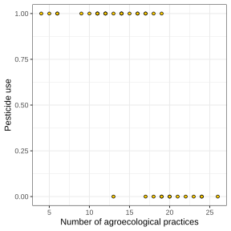

![]()
Show me the code
library(readxl)
library(tidyverse)In this tutorial, you will learn how to fit a logistic regression model in R, interpret the model coefficients, and calculate predicted probabilities. We will also explore how to evaluate the performance of the model and assess how well it explains the observed data.
Let’s get started!
To work on this tutorial, you will need to load the readxl and tidyverse packages.
library(readxl)
library(tidyverse)Start by importing the data used in this course (see previous tutorials).
#Option 1 (csv file)
data <- read_csv("gss_statistics_master_data_set2.csv")
#Option 2 (Excel file)
data <- read_excel("gss_statistics_master_data_set2.xlsx")Logistic regression is a statistical method used to model the relationship between a response variable and one or more explanatory variables when the response variable follows a binomial distribution, such as binary variables (1 or 0, success or failure, etc.) or proportion data.
The logistic model describes how the probability of a binary outcome (e.g., presence/absence or success/failure) changes with one or more explanatory variables. Let (\(p\)) be the probability that the outcome equals 1 (e.g., probability that a species is present at a site, or probability of success). Instead of modeling this probability directly, the logistic model first expresses it as odds (Equation 1).
\[ odds=\frac{p}{1-p} \tag{1}\]
The odds describe how likely the event is to occur (\(p\)) compared to not occurring (\(1-p\)). For example, if an event has a probability of success (\(p\)) of 0.75, the odds are 3 (0.75/0.25), meaning the event is three times as likely to occur as not occur.
The logistic regression model then takes the logarithm of the odds (called logit) and models it as a linear function of explanatory variables (\(x_1, x_2, ..., x_n\)) (Equation 2).
\[ logit(p)=log(\frac{p}{1-p})=\beta_0+\beta_1x_1+\beta_2x_2+...+\beta_nx_n \tag{2}\]
This is exactly the same as writing:
\[ p=\frac{1}{1+e^{-(\beta_0+\beta_1x_1+\beta_2x_2+...+\beta_nx_n)}} \]
In this model, the coefficients (\(\beta\)), which are estimated from the data, describe how the explanatory variables affect the log-odds of the outcome.
In this tutorial, we will aim to model the relationship between pesticide use (binary variable: Yes or No) and the number of agroecological practices (n_practices).
We first need to convert the pesticide variable into a binary variable (1 if the farm uses pesticides, 0 if the farm does not use pesticides).
In data, create a new binary variable (pesticide2) that is 1 or farms that use pesticides and 0 for farms that do not. Use dplyr::mutate() to create this new variable. You will also need to use a relational operator (see first tutorial) to write a condition that will allow R to categorize farms based on pesticide use. The function if_else() is also needed here as you can use it to tell R to assign the value 1 when pesticide > 0, but 0 otherwise.
data <- dplyr::mutate(data, pesticide2 = if_else(pesticide > 0, 1, 0))Let’s start by visualizing the relationship between pesticide use (pesticide2, y-axis) and the number of agroecological practices (n_practices).
Create a scatter plot of the relationship between the number of agroecological practices (n_practices, x-axis) and pesticide use (pesticide2, y-axis).
ggplot(data = data,
mapping = aes(x = n_practices,
y = pesticide2)) +
geom_point(shape=21,
fill = "#FFCD00", #Fill colour for shape
colour = "black")+ #Border colour for shape
xlab("Number of agroecological practices")+ #Change name of x axis
ylab("Pesticide use")+ #Change name of y axis
theme_bw() #This creates a black/white plot
To fit a logistic regression model in R, we can use the glm() function (generalized linear model). You will need to consider three main arguments to use this function:
formula: a formula specifying the model. The formula must have the following form: response ~ predictor.
data: a data frame in which the variables specified in the formula will be found.
family: the error distribution and link function to be used in the model. Default is set to family = gaussian, which assumes that residuals follow a normal distribution (model results will then be identical to lm()). To fit a logistic regression model, you need to use family=binomial(link="logit"). This tells R that the response variable follows a binomial distribution and that a logistic link function should be used.
glm() to model the relationship between the number of agroecological practices (n_practices, x-axis) and pesticide use(pesticide2, y-axis) using a logistic regression. Store the model into an R object called model.summary() on the model object and inspect the summary table. Make sure you understand the information contained in this output.model <- glm(pesticide2 ~ n_practices,
data,
family = binomial(link="logit"))summary(model)
Call:
glm(formula = pesticide2 ~ n_practices, family = binomial(link = "logit"),
data = data)
Coefficients:
Estimate Std. Error z value Pr(>|z|)
(Intercept) 11.9311 4.2124 2.832 0.00462 **
n_practices -0.6768 0.2399 -2.822 0.00478 **
---
Signif. codes: 0 '***' 0.001 '**' 0.01 '*' 0.05 '.' 0.1 ' ' 1
(Dispersion parameter for binomial family taken to be 1)
Null deviance: 47.092 on 35 degrees of freedom
Residual deviance: 20.274 on 34 degrees of freedom
AIC: 24.274
Number of Fisher Scoring iterations: 7Both the slope and the intercept of the model are significantly different from zero (p < 0.01).
The equation of the model is as follows:
\[ logit(p)=log(\frac{p}{1-p})=11.93-0.68 \times x_1 \]
The same equation could be rewritten as:
\[ p=\frac{1}{1+e^{-(11.93-0.68 \times x_1)}} \]
From the equations above, we can figure out that for the odds of using pesticides get multiplied by \(e^{-0.68}=0.51\) every time that one agroecological practice is added.